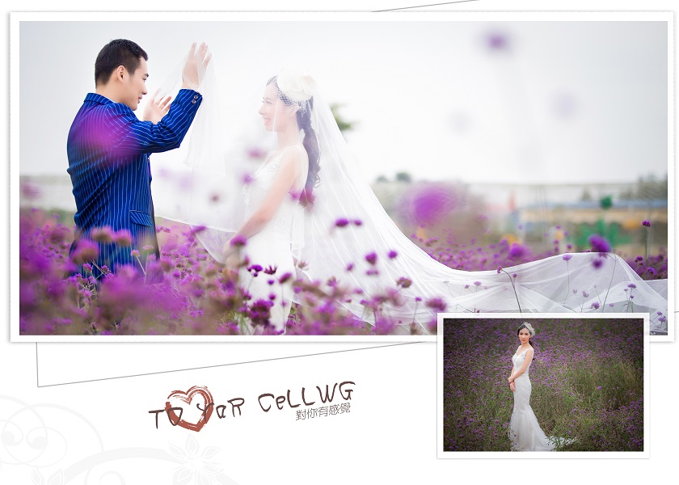

主内容区域由两部分组成，左侧固定宽度和高度的图片，右侧是文本内容，右侧内容与左边图像间距为10px，右侧的宽
度和高度是随着文本内容的宽度和
高度自适应的，主内容区域的宽度和高度是根据其子元素文本内容的宽度和高度自适应的。主要的布局方法有三种，具
体方法介绍如下所示：
-
float浮动布局，设置左侧图像为左浮动，高度为300px；css代码为img{float:left;height:300px}，设置右侧内容
与左边图像的外边距，p{margin-left:110px;}
-
position定位布局，须设置父元素为相对定位main{position:relative;}，然后设置图像为绝对定位，其css代码为：
img{position:absolute;left:0;top:0;height:300px;}，设置右侧内容
与左边图像的外边距，p{margin-left:110px;}；
-
flex弹性盒布局，设置父元素main{display:flex;}，左侧图像img{height:300px;},右侧内容p{margin-left:10px;}
-
tips:自适应高度的父元素，如果其子元素为浮动或绝对定位，即子元素脱离了文档流，父元素的高度塌陷，
因此上面三种方法，float和position均需对父元素设置一个最小高度main{min-height:300px;}